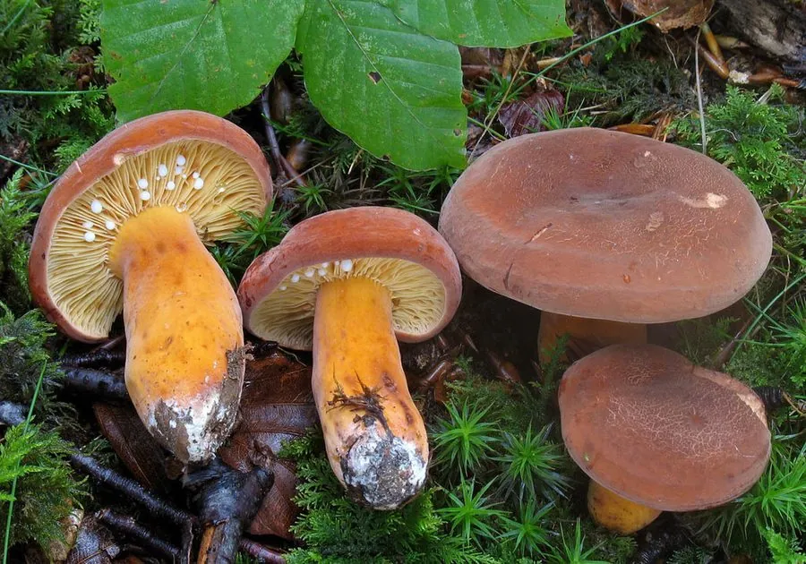

真菌 · 真菌界
多汁乳菇 Lactarius volemus

红菇科食用菌，菌盖橙褐、伤后流出大量白色乳汁，气味似鱼腥，夏秋生于阔叶林地上，须煮熟食用。
- 分类
- 门担子菌门纲伞菌纲目红菇目科红菇科属乳菇属
- 栖息环境
- 阔叶林地上，与栎、栗等形成外生菌根，夏秋发生
- 地理分布
- 北半球温带至亚热带林地分布，中国华东、西南及欧洲、北美有记录
- 保护级别
- 暂无评估；野生资源受采集与林地减少影响
物种志
多汁乳菇的子实体中等，菌盖直径 5–12 厘米，初期凸起，后平展至中央下凹，表面橙褐、黄褐至红褐色，光滑，干后常龟裂，边缘内卷。菌肉白色，厚，质地脆，伤后流出大量白色乳汁，乳汁初白后变褐。菌褶白色至淡黄，密集，直生至延生，伤后变褐。菌柄长 5–12 厘米，直径 1.5–3 厘米，与菌盖同色或稍浅，中空。孢子印白色至淡黄。
多汁乳菇生于阔叶林地上，与栎、栗等形成外生菌根，夏秋 7–10 月发生。它以乳汁丰富著称，民间称“奶浆菌”，菌肉厚实、味道鲜美，可炒食、炖汤或干制，但必须煮熟。其气味在新鲜时略带鱼腥，加热后转为鲜香。采食乳菇时需注意与有毒的乳菇区分：凡乳汁辛辣、变色剧烈（如变紫、变绿）、或菌盖带明显环纹者，应避免食用。
形态与习性
- 菌盖直径 5–12 厘米，橙褐色，干后龟裂
- 乳汁伤后流出大量白色乳汁，后变褐
- 菌褶白色至淡黄，密集，伤后变褐
- 孢子印白色至淡黄，孢子具小疣
- 生境阔叶林地上，与栎类共生，夏秋发生
- 食用性菌肉厚实味鲜，须煮熟，忌辛辣乳汁种类
趣味知识
- 多汁乳菇的乳汁多到切开就会流淌，民间因此叫它“奶浆菌”。
- 新鲜时它带一股鱼腥味，加热后却变成鲜香，是产地人喜爱的风味。
- 乳菇属的鉴别诀窍是看乳汁：辛辣、变色剧烈的种类多半有毒。
- 它的乳汁沾在手上会氧化变褐，采后要尽快处理，否则菌褶会发黑。